Overview
This section will explain how end users can interact with and use the case list in the mobile application, as well as go over several other options that are available when running a case on a mobile device.
 Starting a New Case
Starting a New Case
The mobile app allows users to start a new case of a process previously created in the web edition of ProcessMaker. Upon opening the ProcessMaker app, the Inbox will show a list of all the cases that the user has been designated to work on, but has not yet begun. To start a case, tap on the plus sign button located at the bottom of the screen. All available processes for the user to begin will be listed on the next screen.
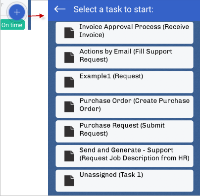
Select a task and tap on it to start or continue that case. It will open a Dynaform for the user to work on and submit.

 Searching for a Process
Searching for a Process
Available Version: From 1.0.8 on.
The mobile app allows users to search for a process in the list of processes. To search for a process, tap on the magnifying glass sign located at the top-right of the screen.
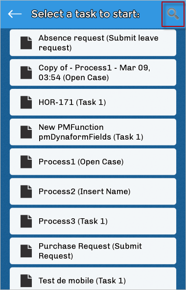
Type in the name of a process and the list of processes will be filtered based on the search input.

Case List
The user can work with cases directly from the ProcessMaker app through the Case List, which can be accessed by tapping on the Case List button found on the upper left side of the screen - it is the icon that has three horizontal lines. When this button is tapped, a new, smaller window appears on the left side of the screen displaying the user's case list. Here, the user's cases are divided into different sections: Inbox, Unassigned, Draft, and Participated, which will be explained in the following sections. The user can easily access each section simply by tapping on the desired selection.

Inbox
The inbox contains the list of all the cases that the user is assigned to work on. The cases are listed by their case number, with the name of the case shown underneath. There are three case statuses: On time, At risk and Overdue.
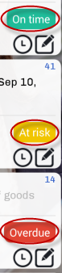
Choose a case from the inbox and tap on it. Then, select a task to start working on and the Dynaform of the said task will open, allowing the user to fill in the empty fields.
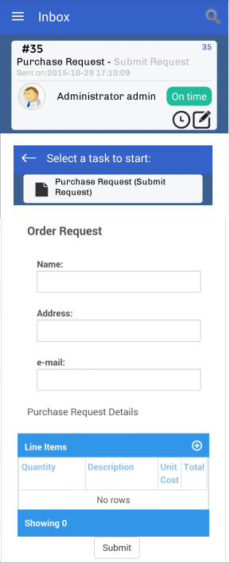
A case can also be searched for by name by tapping on the magnifying glass in the upper right side of the application. The search option is available in all sections.
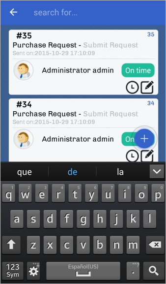
Note: Notice that a case can be started by tapping on the (+) sign in the right corner of the screen.
Unassigned
The Unassigned panel includes all cases that can be claimed by a pool of users assigned to the task. When there are cases in the Unassigned tab, then anyone can claim the case to work on it; to work on an unassigned case, tap on it to open it. Once opened, the Case Information panel shows all the details about the unassigned case, like the status, date, description and more. Tap on Claim this case to assign the case to yourself.
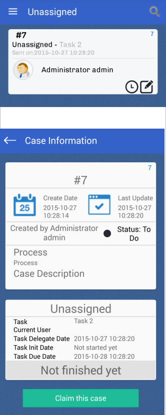
The case will immediately open and will be ready to be worked on.
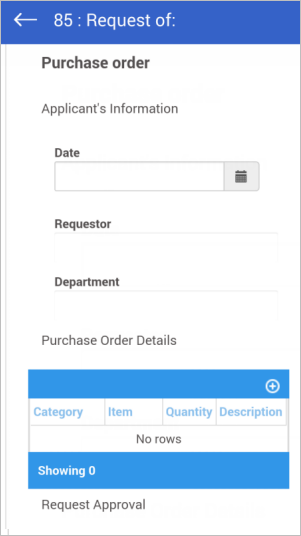
Note: Notice that a case can be started by tapping on the (+) sign in the right corner of the screen.
Draft
The Draft tab includes cases that are being edited or advanced by the user, but have not yet been submitted to the next task. Cases are considered to be in Draft status after the user edits the case data by submitting a Dynaform, uploading an input document or after moving to a subsequent step in the current task.
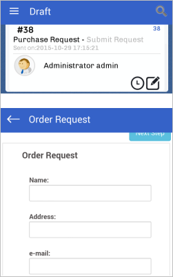
Note: Notice that a case can be started by tapping on the (+) sign in the right corner of the screen.
Participated
The Participated tab includes all the cases that the user has sent or participated in. Click on a case and its information will be displayed on the screen.

Note: Notice that a case can be started by tapping on the (+) sign in the right corner of the screen.
Additional Options
Besides the Case List, there are also a few more options to consider, including Case Notes, History, Settings, Help and Logout.
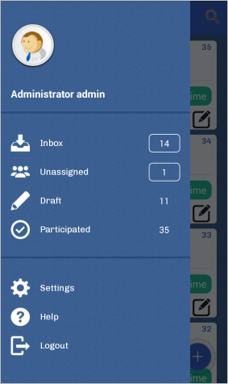
Case Notes
To add a case note to a case, tap on the pencil-clock icon in the bottom right corner of any case.
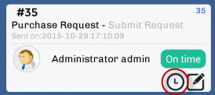
The Case Notes window will open. If nobody has added a case note to the case, then the window will be empty. Tap on the square with a pencil in the upper right side of the screen, and a window that says "Add note" at the top will allow the user to add a note. Tap on Post to add it to the case. Tap on Cancel to exit.
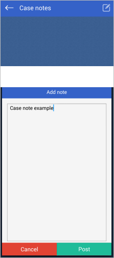
History
View the history of a case by tapping on the square with a pencil icon in the bottom right corner of any case.
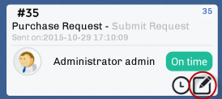
When tapped, a new window containing information about the history of the case will be displayed. This includes the name of the tasks, the people assigned to the tasks, the status, the date and the time when the status changed.
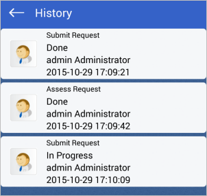
Settings
Displays the endpoint configuration, where the user can interact with several options:
- Server URL
- Workspace
- Clean Cache
- Enable External Libraries Cache (Available Version: 1.1 )
- Language (Available from version: 1.0.7 )
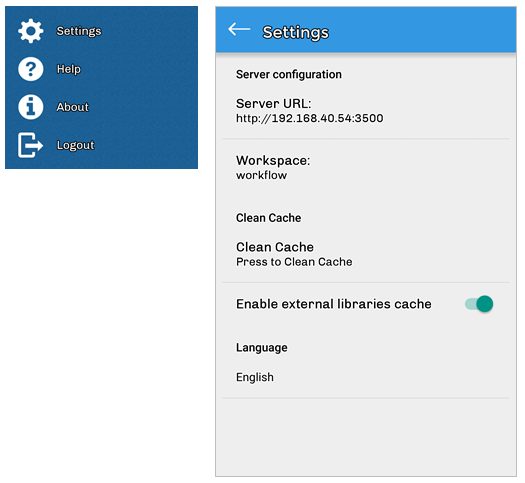
Server URL
The Server URL field is where the URL of the ProcessMaker server should be entered, such as http://192.168.1.1 or http://pm.example.com. In this example, an account was created in the Enterprise Trial Server, so the URL of that server is used.
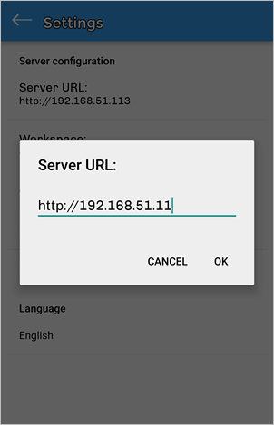
Workspace
In the Workspace field, the name of the workspace being used must be entered, such as "workflow". If using a personal ProcessMaker server, the default workspace is named "workflow".

Clean Cache
By tapping Clean Cache, the user can delete the app's cached data. After tapping Clean Cache, a message will be displayed informing the user that the app's data will be deleted.
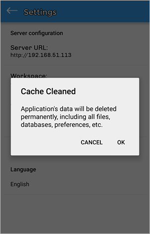
Enable External Libraries Cache
As of version 1.1, the Enable External Libraries Cache option is available to improve the performance of the ProcessMaker app. In earlier versions of the app, ProcessMaker Mobile downloaded JavaScript libraries every time a Dynaform was loaded. Now, if this option is turned on, the same libraries are downloaded into the device cache to load Dynaforms and subforms faster.

The first time a Dynaform or subform that contains external libraries is loaded, all these libraries are downloaded at the same time and stored in the device cache. Therefore, the second time the Dynaform or subform is loaded, the loading time is faster.
These libraries can be cleared from the device by going to Settings and tapping on the Clear Cache option.
Language
As of version 1.0.7, ProcessMaker Mobile has added the Language feature. This feature allows the user to change the language of the mobile app from English to another language.
Change the language by tapping on Settings and scrolling down to the bottom of the screen, where the Language setting can be found.

Tap on Language to display a screen within the Settings window. At this moment there are four languages that can be chosen, which are:
- English (Default)
- Spanish
- French
- Portuguese
- Arabic

Tap on any of the four options to change the language. For example, choose "Portuguese" and observe the changes in the image below.
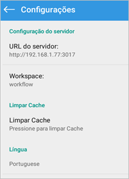
The changes will take effect throughout the whole application.
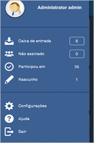
Mobile Right-to-Left Language Support
As of version 1.2, the ProcessMaker mobile application supports right-to-left functionality for the Arabic language.
To see this feature, select the Arabic language under Settings > Language.
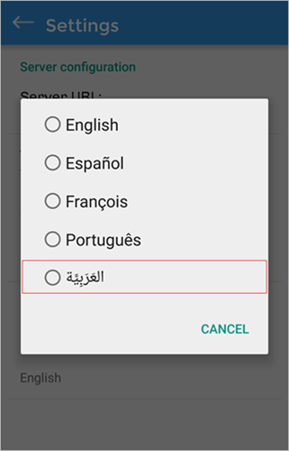
The interface of the ProcessMaker Mobile app will change to support right-to-left orientation.
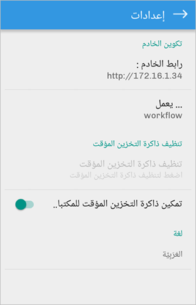
Error and alert messages will also be displayed from right to left.

The user will also be able to enter text from right to left in the login interface.
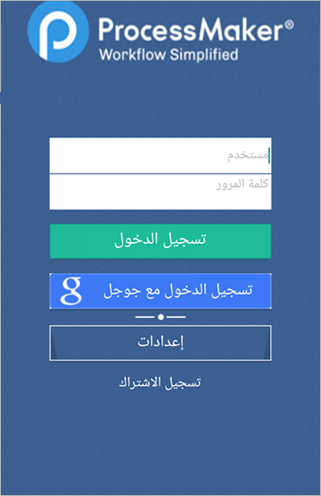
After logging in to the mobile application, the user will see that his/her inbox tray will look like the image below:
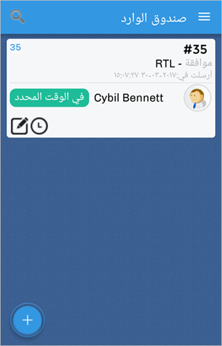
The navigation bar will be displayed at the right side of the screen.
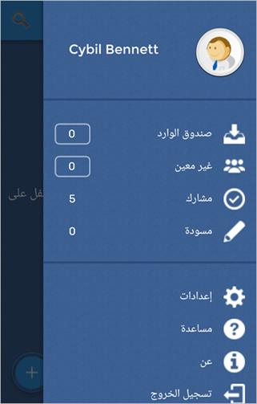
Moreover, when running a case, the Dynaform interface will display the text from right to left.
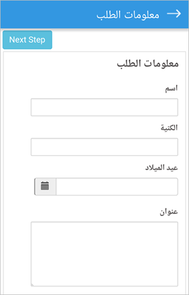
After submitting a case, the routing screen will be converted to the Arabic interface.
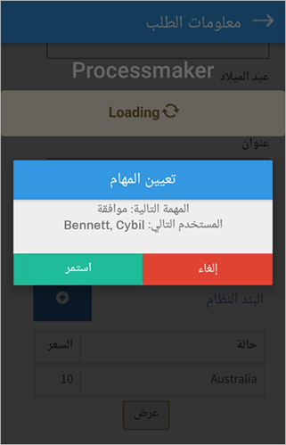
And if mobile controls were included in the Dynaform, their interfaces will also be changed to support right-to-left orientation.

Grids in ProcessMaker Mobile RTL Language Support
Labels and icons of controls inside grids are changed to be displayed at the right. As well as the New button that adds a new row to the grid..
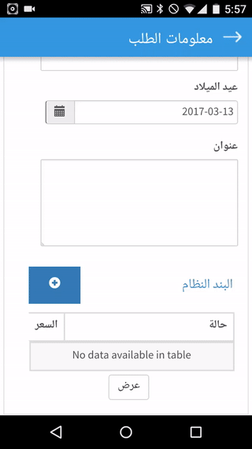
The user will be able to write from the right to the left in each one of the rows of the grid.
Known Issues of ProcessMaker Mobile RTL Language Support
The Mobile RTL language support feature has some issues on certain devices. Please read the following known issues before using this feature:
- In Samsung Mini S4 devices with Android 4.4.2 there are problems rendering Dynaform elements. Sometimes the elements below a grid or even the grid itself are not visible in Dynaforms.
- In iOS 9.x devices, the WebView component has some issues scrolling in the RTL direction. For example, when the user scrolls to the left in a grid.
These known issues will be fixed in upcoming versions of the ProcessMaker Mobile app.
Help
This option will redirect the user to the ProcessMaker wiki. Useful information about the mobile application can be found on this page.

Logout
The Logout option will ask the user if they are sure they want to quit, because all data that was not saved will be lost. Tapping OK will quit the ProcessMaker app and go back to the main screen.
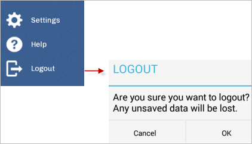